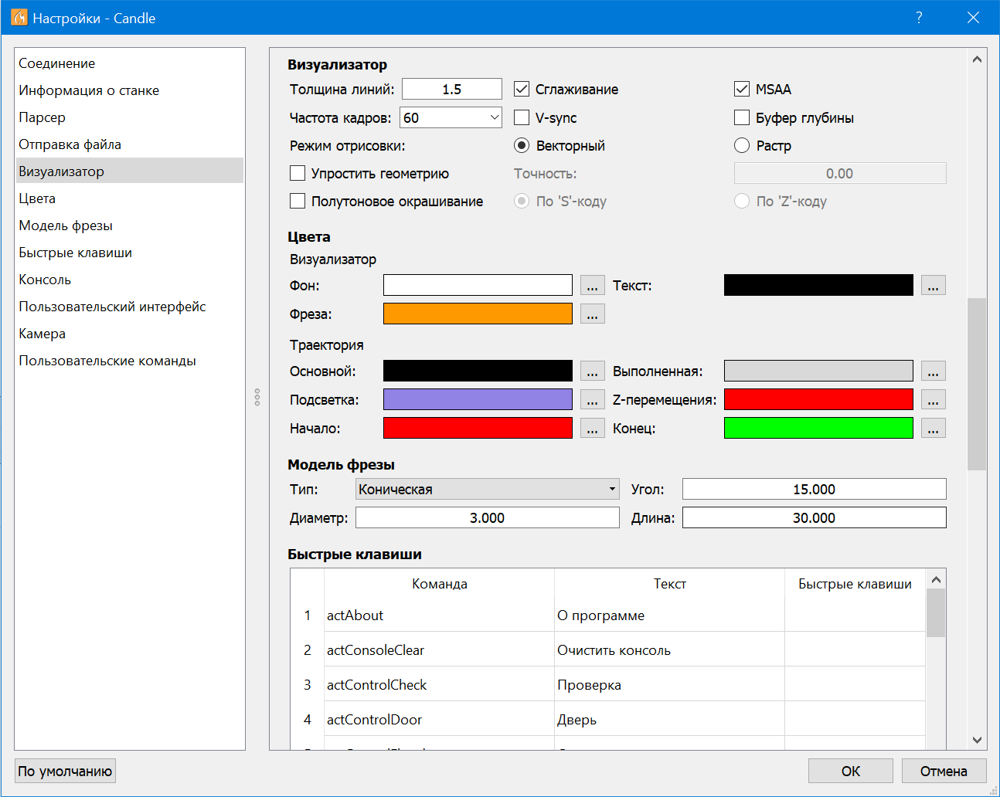

Настройки программы доступны в окне настроек, вызываемое по активации пункта "Настройки" меню "Сервис" программы.

Окно содержит три области: область слева - список групп настроек; область справа - элементы управления настройками выбранной группы; область снизу - кнопка установки настроек в значения по-умолчанию, кнопки подтверждения и отмены изменений настроек.
Ниже приведена информация о доступных настройках программы: группа, параметр, описание, допустимые значения, значение по-умолчанию.
| Группа | Параметр | Описание | Допустимые значения | Значение по-умолчанию |
|---|---|---|---|---|
| Соединение | Последовательный порт | Подключаться к ЧПУ через последовательный порт | Включено, выключено | Включено |
| Порт | Последовательный порт соединения с контроллером ЧПУ | Путь к устройству | Пусто | |
| Скорость | Скорость обмена по последовательному порту | 9600, 14400, 19200, 38400, 57600, 115200, произвольное число | 115200 | |
| Telnet | Подключаться к Telnet-серверу контроллера ЧПУ | Включено, выключено | Выключено | |
| Адрес | Адрес сервера | Произвольный адрес | 192.168.0.1 | |
| Порт | Порт сервера | Произвольный порт | 23 | |
| WebSocket | Подключаться к WebSocket-серверу контроллера ЧПУ | Включено, выключено | Выключено | |
| URL | URL сервера | Произвольный URL | ws://192.168.0.1:81 | |
| Режим - Текст | Использовать текстовый формат при приеме сообщений от контроллера ЧПУ | Включено, выключено | Включено | |
| Режим - Двоичный | Использовать двоичный формат при приеме сообщений от контроллера ЧПУ | Включено, выключено | Выключено | |
| Период опроса | Время между запросами состояния контроллера | от 10 до 9999 мс | 100 | |
| Информация о станке | Скорость шпинделя мин. | Минимальная скорость вращения шпинделя (используется панелью "Шпиндель") | от 0 до 99999 об/мин | 0 |
| Скорость шпинделя макс. | Максимальная скорость вращения шпинделя | от 0 до 99999 об/мин | 10000 | |
| Мощность лазера мин. | Минимальная мощность лазера (используется при полутоновом окрашивании растровой визуализации УП) | от 0 до 99999 | 0 | |
| Мощность лазера макс. | Максимальная мощность лазера | от 0 до 99999 | 100 | |
| Отправка файла | Команды начала программы | G-код команды, отправляемые в контроллер ЧПУ перед передачей УП | Набор G-код команд (допустимо использование JavaScript) | Пусто |
| Команды конца программы | G-код команды, отправляемые в контроллер ЧПУ после передачи УП | Набор G-код команд (допустимо использование JavaScript) | Пусто | |
| Команды смены инструмента | G-код команды, отправляемые в контроллер ЧПУ при обработке команд смены инструмента | Набор G-код команд (допустимо использование JavaScript) | Пусто | |
| Игнорировать ошибки при отправке файла | Флаг, управляющий остановкой передачи УП при возникновении ошибок обработки команд контроллером | Включено, выключено | Выключено | |
| Автоматически настраивать парсер перед отправкой с выбранной строки | Включение отправки команд настройки интерпретатора перед отправкой УП с выбранной строки | Включено, выключено | Включено | |
| Приостанавливать передачу файла по командам смены инструмента | Управление приостановкой передачи УП при обработке команд смены инструмента | Включено, выключено | Включено | |
| Пользовательский интерфейс | Размер шрифта | Размер шрифта пользовательского интерфейса программы | 8, 9, 10, 11, 12 пт или произвольное число | 9 |
| Ширина панелей | Ширина панелей главного окна, указанная в единицах средней ширины символа | от 30 до 60 | 40 | |
| Инвертировать управление ползунками | Изменяет поведение ползунков при управлении ими с помощью клавиатуры, мыши, тачпада | Включено, выключено | Выключено | |
| Язык интерфейса | Язык надписей пользовательского интерфейса программы | American English, русский (список может пополняться) | American English | |
| Быстрые клавиши | - | Комбинации клавиш для быстрого вызова функций программы | Произвольные комбинации клавиш | Пусто |
| Визуализатор | Толщина линий | Толщина линий 3D проекции УП | от 1 до 9 | 1.5 |
| Сглаживание | Управление сглаживанием линий 3D проекции УП | Включено, выключено | Включено | |
| MSAA | Сглаживание линий 3D проекции УП методом MSAA | Включено, выключено | Включено | |
| Частота кадров | Частота кадров построения 3D проекции УП | 30, 60, 120, произвольное число | 60 | |
| V-sync | Управление вертикальной синхронизацией | Включено, выключено | Выключено | |
| Буфер глубины | Управление перекрытием линий в зависимости от удаленности при построении 3D проекции УП | Включено, выключено | Выключено | |
| Режим отрисовки | Метод построения проекции УП, "Векторный" - в виде отрезков линий, "Растр" - в виде набора точек | Векторный, растр | Векторный | |
| Упростить геометрию | Ограничение минимального размера сегмента УП при отрисовке проекции УП | Включено, выключено | Включено | |
| Упростить геометрию - Точность | Минимальный размер сегмента УП (при нуле преобразуются только сегменты, лежащие на одной линии) | от 0 до 99 мм | 0 | |
| Размер сегментов, аппроксимирующих дуги - по длине | Длина отрезков, разбивающих дуги УП, при отображении в окне "Визуализатор" и работе карты высот | от 0.1 до 99 мм | 0.1 (выключено) | |
| Размер сегментов, аппроксимирующих дуги - по углу | Угол разбития дуг УП, при отображении в окне "Визуализатор" и работе карты высот | от 0 до 180 градусов | 5 градусов (включено) | |
| Полутоновое окрашивание | Управляет функцией окрашивания точек при растровом построении проекции | Включено, выключено | Выключено | |
| Полутоновое окрашивание - По 'S'-коду | Управляет функцией окрашивания точек по "S"-коду УП | Включено, выключено | Включено | |
| Полутоновое окрашивание - По 'Z'-коду | Управляет функцией окрашивания точек по "Z"-коду УП | Включено, выключено | Выключено | |
| Модель фрезы - Тип | Вид модели инструмента в окне "Визуализатор" | Плоская, коническая | Коническая | |
| Угол | Угол конуса конической модели инструмента | от 0 до 180 градусов | 15 | |
| Диаметр | Диаметр модели инструмента | от 0 до 99 мм | 3 | |
| Длина | Длина модели инструмента | от 0 до 999 мм | 30 | |
| Цвета - Визуализатор - Фон | Задает цвет фона в окне "Визуализатор" | Произвольный цвет | Белый | |
| Визуализатор - Текст | Задает цвет текста в окне "Визуализатор" | Произвольный цвет | Черный | |
| Визуализатор - Фреза | Задает цвет модели инструмента в окне "Визуализатор" | Произвольный цвет | Оранжевый | |
| Траектория - Основной | Задает цвет рабочих ходов траектории в проекции УП | Произвольный цвет | Черный | |
| Траектория - Выполненная | Задает цвет частей траектории, обработанных ЧПУ при передаче УП в контроллер | Произвольный цвет | Серый | |
| Траектория - Подсветка | Задает цвет частей траектории, отправленных в ЧПУ, цвет маркера выбранной строки УП | Произвольный цвет | Фиолетовый | |
| Траектория - Z-перемещения | Задает цвет вертикальных перемещений траектории | Произвольный цвет | Красный | |
| Траектория - Начало | Задает цвет маркера начала УП | Произвольный цвет | Красный | |
| Траектория - Конец | Задает цвет маркера конца УП | Произвольный цвет | Зеленый | |
| Консоль | Отображать команды G-code программы | Управляет отображением G-код команд УП в окне "Консоль" во время передачи УП в контроллер | Включено, выключено | Выключено |
| Отображать команды интерфейса пользователя | Управляет отображением G-код команд, отправляемых с помощью элементов инструментальных панелей | Включено, выключено | Включено | |
| Автозавершение команды | Автоматическое завершение команды при вводе в поле окна "Консоль" на основе введенных прежде | Включено, выключено | Включено | |
| Камера | Наименование | Наименование камеры, изображение которой выводится в окне "Камера" | Список доступных камер, произвольное наименование | Пусто |
| Разрешение | Разрешение изображения, выводимого с камеры | Список поддерживаемых разрешений, произвольное разрешение | 1280x720 | |
| Позиция | Смещение изображения камеры в окне "Камера" по горизонтали и вертикали | Произвольное смещение в точках | 0, 0 | |
| Масштаб | Коэффициент масштабирования изображения камеры | Произвольное число | 1 | |
| Позиция перекрестья | Относительное смещение прицельных элементов по горизонтали и вертикали | Произвольное смещение в относительных единицах от 0 до 1 | 0, 0 | |
| Размер перекрестья | Диаметр прицельной окружности | от 1 до 100 | 20 | |
| Цвет перекрестья | Цвет прицельных элементов | Произвольный цвет | Красный | |
| Толщина линии | Толщина линий прицельных элементов | от 0 до 100 | 1 | |
| Пользовательские команды | - | Таблица команд панели "Пользовательские команды" | Произвольный набор команд | Тестовые команды |